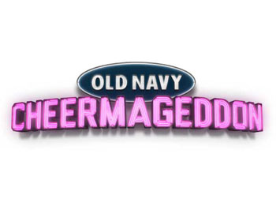

{ Work }
Welcome to the area you were looking for (probably). The area to look at to see what and how I do.
-
Applebees
CP+B took on Applebees as a client in 2012, a huge win for the agency and a huge task for the development team. We needed to perform a complete site rebuild in the course of a couple of weeks. It was a few rather late nights but we pulled through with a high level of code quality.
Technologies used:
- Sitecore
- ASP.net
- LAB.JS
- Backbone.js
- jQuery
Link:
-
Arby's
General site maintenance may not be the sexiest of work, but it's something that needs to happen. For Arby's, I worked on general site maintenance as well as lead the monthly promotional Email blasts+landing pages.
Technologies used:
- MODX Content Management System
- LAB.JS
- Backbone.js
- jQuery
Link:
-

OPEN Form by American Express
Worked on the front of .Net application to update older application to new design. Lots of experience with implementing new social tools and analytics software such as Omniture.
Technologies used:
- .Net
- jQuery
- Omniture Tracking
- Social Tool Integration
Link:
-

Old Navy Cheermageddon
Cheermageddon was the name for Old Navy's 2012 Black Friday sale. Due to the short lifespan of this project many awesome new were able to be used. This provided both a fantasic opportunity and a learning experience. Plus it yielded what is by far my proudest moment working in advertising: this.
Technologies used:
- Node.JS
- SASS
- Grunt.JS
- Compass
- Swig Templating
- Backbone.JS
- jQuery
- responsively designed
-

Vail's EpicMix
The first 'professional' project I worked on. Huge enterprize .Net application and front end to display the 'pins' and achievements a user has earned while skiing. Really fun idea!
Technologies used:
- Sitecore
- .Net
- jQuery
Link:
{ Brew }
Ah, beer. Beverage whos history is as rich as the malty grains that produce it. About 2 years ago I took up homebrewing in an effort to create my own craft beers. The results have been generally positive.
Currently Brewing
Berliner Weisse
Due: soon. I hope.
Kegorator
I hope to fill this section with statistics on my kegorator. Still working on that.
{ About }
Welcome to the page where I talk about my history. Some people might call this an About Me page, or a self edited wikipedia page. Either way, you're about to learn a lot of infomation you could probably care less about so brace yourself and I'll try to keep this short.
I'm from Fredonia, NY, a small town in upstate who wins the Guiness World Record for most bars per-capita(or so I hear, no idea if that's true). I wrote my first "Hello World" in C while in the 4th grade and my first full on website in 5th. Attended college and achieved a Bachelor's degree in New Media Interactive Development from Rochester Institute of Technology in 2010.
After College, I moved to Colorado where I worked at Cripsin Porter and Bogusky til now.